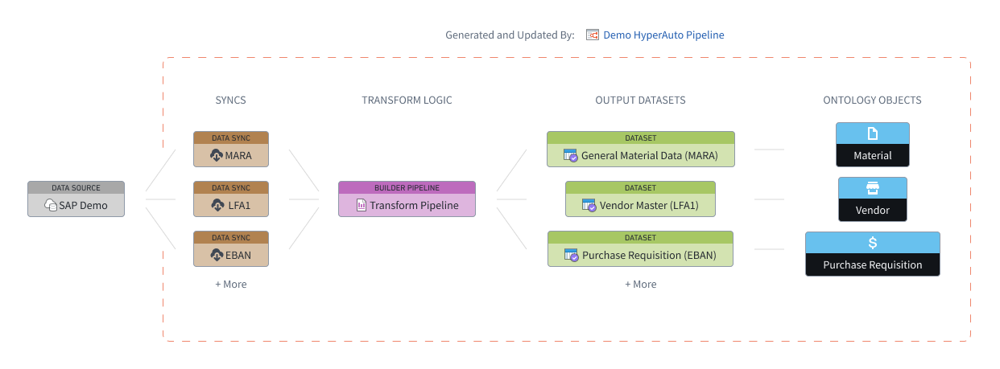
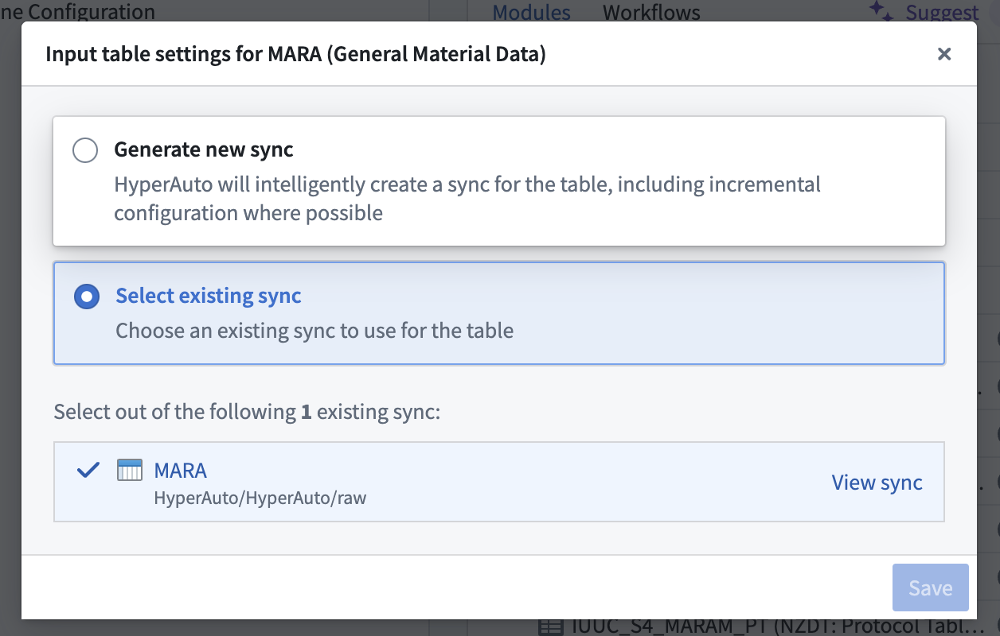

:::callout{theme="neutral"} This page describes the architecture of HyperAuto V2. For a description of HyperAuto V1's architecture, visit HyperAuto V1 overview. :::
HyperAuto V2 provides orchestration and automation around three main components of the data integration workflow - Data Syncs, Builder Pipelines, and Ontology - in order to automatically generate ready-to-use outputs from supported sources.
HyperAuto leverages the metadata of a data source, querying the source in real-time to derive opinions on how syncs should be built, what transformation logic should be applied, and how an appropriate Ontology can be designed.
A HyperAuto pipeline refers to all resources managed by a single HyperAuto instance, from syncs to objects. Each pipeline takes a user-provided list of source tables as an input, syncs them to Foundry (if required) and transforms them into valuable, ready-to-use output datasets and (optionally) Ontology Objects. Users may make multiple HyperAuto pipelines per source to fit their individual needs.

:::callout{theme="neutral"} HyperAuto also supports the use of static files when no direct connection to the source exists, in which case this section does not apply. See the folder-based SAP documentation to learn more. :::
HyperAuto provides access to the entire set of visible tables on the source. If a user selects a source table that is not mapped to an existing data sync, a new data sync will be automatically generated.
If one or multiple data syncs already exist for the selected source table, the latest sync will be selected by default. You can change that selection on the Input Configuration page by hovering over the Configure input table button. From there, either select a different existing sync to use or choose to create a new sync.
:::callout{theme="neutral"} Depending on data scale, generation may take significantly longer if HyperAuto has created new data syncs. This is because data syncs require an initial run before the rest of the HyperAuto process, such as builder pipeline generation, can take place. :::

Data transformation within HyperAuto pipelines allows hard-to-use source data to be converted into cleaned, enriched outputs that can be immediately used for analysis and application building.
HyperAuto pipelines are powered by automatically generated builder pipelines - the primary method of data transformation within Foundry.
HyperAuto dynamically generates opinionated transformation logic based on the source type and the user's preferences. Users can view this builder pipeline by selecting View pipeline from the HyperAuto Pipeline Overview page. Edits to this pipeline are performed by changing the HyperAuto configuration through a proposal.
The types of transform functionality available within HyperAuto are as follows:
Both batch and real-time streaming pipeline modes are supported, see configuration options for more detail.
HyperAuto can use the source's data model to dynamically generate an Ontology based on the generated output datasets, including defining the semantic links between the objects.
Enabling this setting allows you to go from a new (supported) source to a fully-defined Ontology in a matter of minutes, with no manual intervention required.
If you are interested in this feature, contact your Palantir representative.
HyperAuto pipelines are designed to fully control any resources they create, allowing the user to consistently receive benefits and upgrades to their system, including performance upgrades and bug fixes. The design of these pipelines also makes it easy to tweak already-generated resources, such as adding a new transform step or input to the pipeline.
Any edits to the underlying resources (for example, syncs or builder pipelines) must be managed via the HyperAuto application to avoid change conflicts.
If needed, deleting the HyperAuto pipeline resource will remove its ownership over the corresponding builder pipeline, allowing direct edits to the builder pipeline as normal.